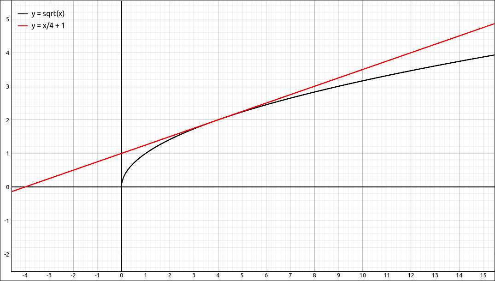
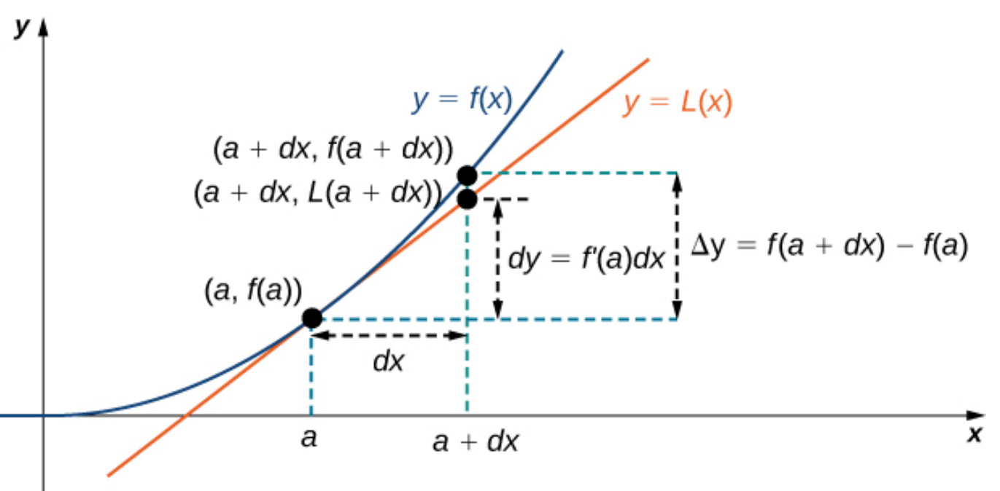
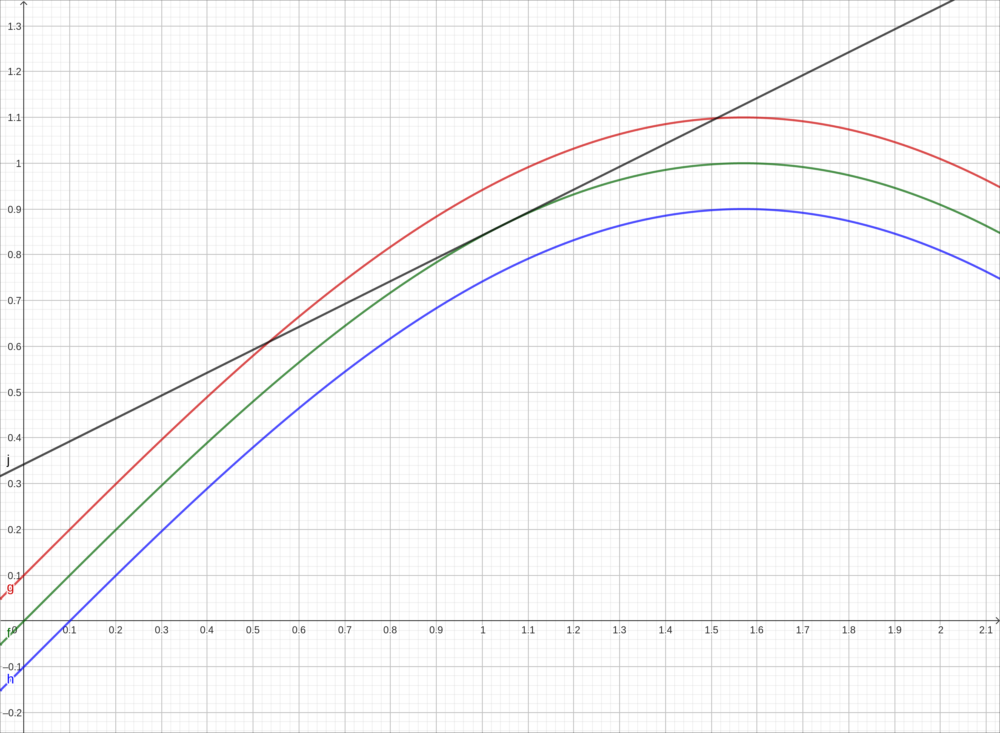
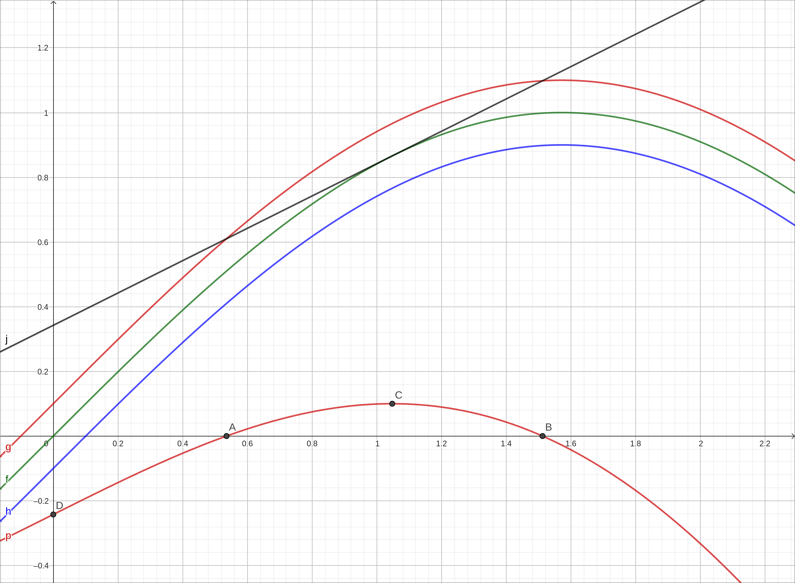
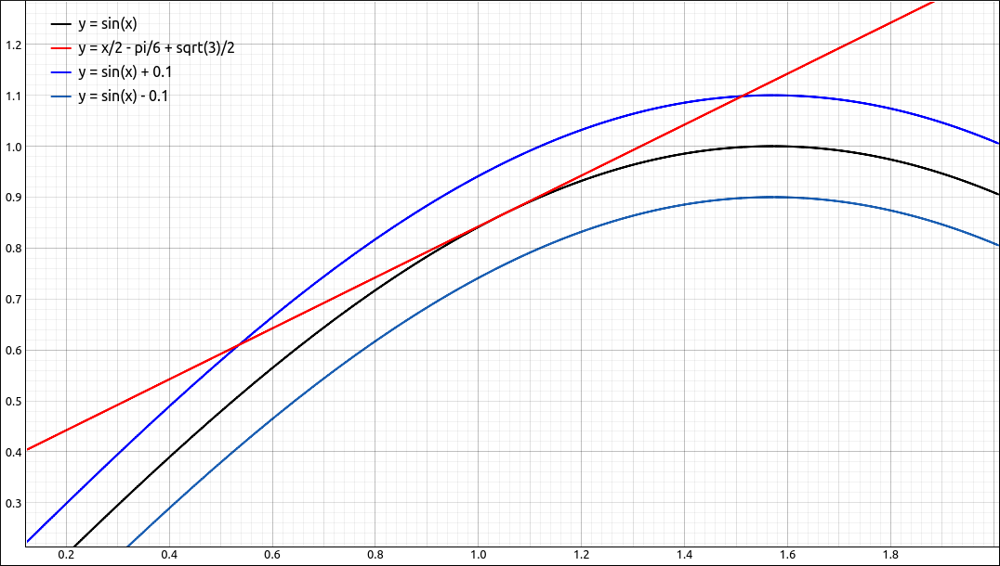
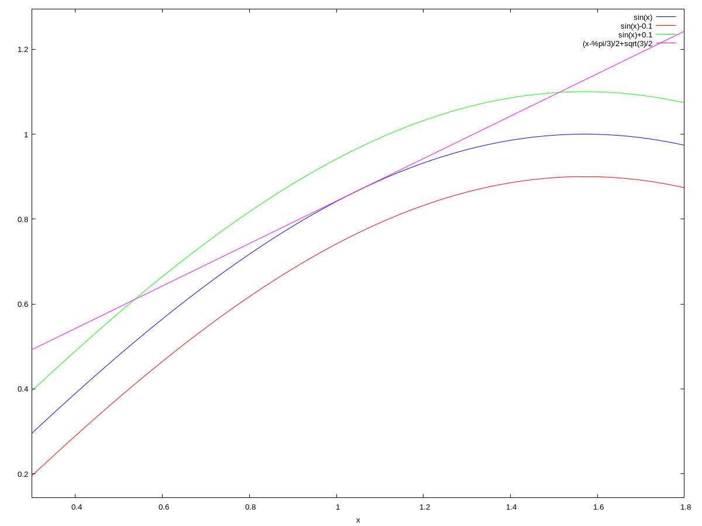

Linear Approximations and Differentials#
Discussion & Definitions#
Recall that if a function \(f\) is differentiable at \(x = a\) then the equation of the tangent line to \(f\) at \(x = a\) is,
To help with the general discussion let’s look at a specific example first. Let \(f(x) = \sqrt{x}\) and let \(a = 4\). The tangent line to the curve at that point is \(y = \frac{x}{4} + 1\). Graphing the function and the tangent line we get the following image.

\(f(x) = \sqrt{x}\) and Tangent Line#
From the graph it is clear that the tangent line and the curve are close together close to the point of tangency \((4,2)\). Since the two lines are close to each other then the functional values will be close to each other as long as x is close to 4. For example, if we let \(x = 5\), \(\sqrt{5} \approx 2.23606797749979\) and if we evaluate the tangent line at \(x = 5\) we get 2.25. The difference between the two approximations is only 0.0139320225002102.
If we are closer to \(x = 4\) the approximations are even better. For example, if \(x = 4.1\) then the square root is 2.02484567313166 and the tangent line approximation is 2.025, a difference of only 0.000154326868339716. On the other hand, the further we get from \(x = 4\) the worse the approximation becomes. For example, say we let \(x = 12\), the square root of 12 is approximately, 3.46410161513775 but the tangent line approximation at 12 is 4, a difference of 0.535898384862250, not a very good approximation.
Definition: Linear Approximation
Given a differentiable function \(f\), the equation of the tangent line to \(f\) at \(x = a\) can be used to approximate \(f(x)\) for \(x\) near \(a\). Therefore, we can write
for x near a. We call the linear function
the linear approximation, or tangent line approximation, of \(f\) at \(x = a\). This function L is also known as the linearization of \(f\) at \(x = a\).
At this point we wish to quantify the error in these approximates, that is, make the mathematics a little more formal. The Leibniz notation for the derivative is,
Up until now we have simply used this notation as a single symbol representing the derivative, it is actually a bit more than that. \(dx\) and \(dy\) are differentials. \(dx\) is called the x-differential or the independent differential and \(dy\) is called the y-differential or the dependent differential. We define,
So if \(dx\) is not 0 then dividing both sides by \(dx\) gives us the familiar Leibniz notation. In this respect we can think of the derivative as a ratio of differentials. Let’s put this together with the linear approximation discussion above. Consider the figure below. We have a function \(f(x)\) and its graph. There is a point on the graph \((a, f(a))\), now we move the x value a small bit, \(\Delta x = dx\), and ask the question, how much did the y value change?

From Calculus Volume 1 by Edwin “Jed” Herman and Gilbert Strang#
Although everything is pictured in the graph we will write it all out algebraically. The actual change in y is
Recall from above that for x near a,
so
So if x is near a we have that the differential \(dy\) is approximately the change in y, namely, \(\Delta y\).
As an example we will revisit the example above with \(f(x) = \sqrt{x}\) and \(a = 4\).
so
If we use the differential to estimate the change in the function as x goes from 4 to 4.1, \(a = 4\) and \(dx = 0.1\),
The actual change is \(f(4.1)-f(4) \approx 0.02484567313166\), a difference of only 0.000154326868339716.
At this point we would like to relate this to the physical sciences. Anytime you make a measurement there is going to be an error in the measurement. If that measurement error is factored into another calculation the error in the measurement propagates error in the calculation. For example, if you are calculating the volume of a cube and you measure the side of the cube with a ruler that only goes down to 1/32 of an inch then your error in the side measurement is at most 1/32 of an inch but the error in the volume calculation is 1/32 of an inch in each dimension. This type of error is known as a propagated error. Putting this in the language of differentials, let’s say the actual value of the length is a, which we do not know. We do know the measurement which is \(a + dx\) and we have an estimate (or upper bound) on the value of \(dx\). The propagated error is
Again, we do not know the exact value a but we can estimate it with the measurement, so
Going back to the volume of a cube calculation. Let’s say we measured the length of the side of the cube to be 7.5 inches and our ruler only went down to 1/32 of an inch, so the accuracy is only to within 1/32 of an inch. We will use differentials to estimate the error in the volume of the cube and we will get the actual range of the volume calculation.
We know that \(-0.03125 = -1/32 \leq dx \leq 1/32 = 0.03125\). Also, \(V = x^3\), so \(dV = 3x^2 \, dx\). So our estimate on the volume error in cubic inches is
To calculate the volume range we need to put upper and lower bounds on the measurement, we know,
so the volume is in the range,
Our calculated volume would have been \(7.5^3 = 421.875\), so the actual error would be,
which is very close to our differential approximation.
A few more definitions to discuss. The quantity \(\Delta y\) is the absolute error in the calculation, we define the relative error as \(\Delta y/y\) where y is the actual value of the quantity and we define the percentage error as the relative error expressed as a percentage.
Going back to the volume example above, the relative error would be \(\Delta V/V\). We do not know the actual value of V so we will use the measured value and we will approximate \(\Delta V \approx dv\). So our relative error is approximately,
which is 1.25%.
Example: \(\sqrt{8.99}\)#
In this example we will use the linear approximation to estimate \(\sqrt{8.99}\). When you are using computer technology with a calculation this simple the point is not to just get an approximation to the value but to get a better understanding of the mathematical concepts.
With this problem we can look at as \(f(x) = \sqrt{x}\), \(a = 9\), and \(dx = -0.01\). The reason we chose \(a = 9\) was because \(f(9) = \sqrt{9} = 3\) is easy to calculate.
GeoGebra#
Input the function,
sqrt(x)
Now just input the calculation.
f'(9) (-0.01)+f(9)
The result should be 2.99833.
CLAE#
In CLAE the easiest way is to define functions, eliminates a lot of selection of evaluations.
Input the function,
f(x):=sqrt(x)
Take the derivative with Calculus > Derivative, variable x and order 1. Assuming that this is stored in R2, define it as a function with,
df(x):=R2
Now we do the calculation.
df(9)*(-0.01)+f(9)
The result should be 2.99833333333333.
Maxima#
Input the function,
kill(all);
f(x):=sqrt(x)
Take the derivative with
df:diff(f(x),x)
Turn the df expression into a function with,
dff(x):=''df
Now we do the calculation.
dff(9)*(-0.01)+f(9)
The result should be 2.998333333333334.
Example: \(f(x) = \frac{3x^2+2}{\sqrt{x+1}}\)#
In this example we will find \(dy\) given \(f(x) = \frac{3x^2+2}{\sqrt{x+1}}\), \(x = 1\), and \(dx = 0.001\).
GeoGebra#
Input the function,
(3 x^2+2)/sqrt(x+1)
Now just input the calculation.
f'(1)*0.001
The result should be 0.00336.
CLAE#
Input the function,
(3*x^2+2)/sqrt(x+1)
Take the derivative with Calculus > Derivative, variable x and order 1.
Assuming that this is stored in R2, define it as a function with,
df(x):=R2
Now we do the calculation.
df(1)*0.001
The result is \(0.002375 \sqrt{2}\), select Algebra > Approximate to get 0.0033587572106361.
Maxima#
Input the function,
kill(all);
f(x):=(3*x^2+2)/sqrt(x+1)
Take the derivative with
df:diff(f(x),x)
Turn the df expression into a function with,
dff(x):=''df
Now we do the calculation.
dff(1)*0.001
The result should be,
getting an approximation to this gives, 0.003358757210636099.
Example: \(f(x) = \sin(x) \pm 0.1\)#
In this section we have been discussing that the tangent line approximation is good if we are close to the point of tangency. This example asks, if we have a set error bound, how long is our tangent line within the given error of the function. Put another way, in what interval can we use the tangent line approximation and still be within our error tolerance?
We will take the tangent line to \(f(x) = \sin(x)\) at \(x = \frac{\pi}{3}\) and determine the interval were the tangent line approximation is within 0.1 of the actual value.
GeoGebra#
Input the function,
sin(x)
Input the function plus and minus 0.1,
sin(x)+0.1
sin(x)-0.1
Now we will create the tangent line, input and select Tangent, the point is pi/3 and the function is f, assuming that the original function came in as f.

\(f(x) = \sin(x)\) with 0.1 Band#
From the image it appears that the interval is about \([0.5, 1.5]\). We will do a bit better than this. When the tangent line goes outside the 0.1 band we put around the sine function it intersects with \(\sin(x) + 0.1\) so we will take the difference between the tangent line and \(\sin(x) + 0.1\) and then find the roots of this function.
This is a little tricky, note that the tangent line output is in equation form, not an expression or function. We need to extract the right hand side of the equation, do so with RightSide and then input the designation for the equation, most likely i. This extracts the right hand side (which is a function in x) but GeoGebra wrote it as a(x, y) a function of two variables. This is a minor problem that we can easily fix.
Assume that \(\sin(x) + 0.1\) came in as the function g, and the right hand side of the tangent line is a(x, y). Input,
g(x)-a(x,0)
This should now be a function of a single variable, x, probably called p. For this function we could use the Solve or Solutions commands but we will simply ask it for its special points. Looking at the roots of this function we see that the interval where the tangent line is within 0.1 of the function is approximately, \([0.53524, 1,51165]\).

\(f(x) = \sin(x)\) with 0.1 Band#
CLAE#
Input the function,
sin(x)
Input the function plus and minus 0.1,
sin(x)+0.1
sin(x)-0.1
Note, we could have used R1+0.1 and R1-0.1. Now select the function and then select Calculus > Tangent Line, variable x, point of tangency is pi/3, leave the rest of the options set to their defaults. The tangent line is,
and if we graph all of this the image looks like,

\(f(x) = \sin(x)\) with 0.1 Band#
From the image it appears that the interval is about \([0.5, 1.5]\). We will do a bit better than this. When the tangent line goes outside the 0.1 band we put around the sine function it intersects with \(\sin(x) + 0.1\) so we will take the difference between the tangent line and \(\sin(x) + 0.1\) and then find the roots of this function.
Take the difference between the tangent line and \(\sin(x) + 0.1\), probably R4-R2. The result is either,
or its negative. If we try to solve this exactly CLAE will return an error meaning that it simply could not do it. So we will get approximate solutions. Select this function and then select Algebra > Numeric Solutions in [a, b], the variable is x, the lower bound is 0.4 and the upper bound is 1.6. This returns \(\left[ 0.535237609230311, \ 1.51164940503053\right]\), which is our desired interval.
Maxima#
Input the function and the function plus and minus 0.1,
kill(all);
f(x):=sin(x);
ub:sin(x)+0.1;
lb:sin(x)-0.1
Construct the tangent line,
df:diff(f(x),x);
dff(x):=''df;
tl:dff(%pi/3)*(x-%pi/3)+f(%pi/3);
Plot all of these together into one plot.
wxplot2d([f(x), lb, ub, tl],[x,0.3,1.8]);

\(f(x) = \sin(x)\) with 0.1 Band#
From the image it appears that the interval is about \([0.5, 1.5]\). We will do a bit better than this. When the tangent line goes outside the 0.1 band we put around the sine function it intersects with \(\sin(x) + 0.1\) so we will take the difference between the tangent line and \(\sin(x) + 0.1\) and then find the roots of this function. To do so simply run the commands,
find_root(tl-ub,0.4, 0.8);
find_root(tl-ub,1.4, 1.8);
This returns the desired interval \([0.5352376092303115, 1.511649405030529]\).